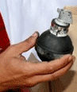

<h3>01.05.2008</h3></a>
<fieldset>

<b>Hurriyet Gazetesi</b><br />
<b>Gaz bombasını kargoyla Güler'e gönderdi</b><br />
Ahmet BAYRAK/MUĞLA, (DHA)<br />
İstanbul polisinin dün Şişli-Taksim civarında binlerce insanı sokağa çıkamaz hale getiren gaz bombalarının üzerinde trajikomik bir ibare olduğu ortaya çıktı. Bombaların aynen şu ifade yazıyor “Toplumsal olaylarda kullanılmaz”, “Bulduğunuz yerde polise teslim edin”.
<br /><br />


<br />

<b>Cop, gaz, basınçlı su ve tekme bayramı</b><br />
Taksim’de 1 Mayıs yine olaylı geçti. Polis, işçilere DİSK binasından dışarı adım attırmadı, basınçlı suyla çıkanı ya içeri ya yola devirdi. Küçük grupların Taksim’e yürüme çabası, cop, gaz bombaları ve attıkları taşlar geri fırlatılarak kırıldı. Şişli Etfal Hastanesi’nde atılan gaz bombasından doktor, hemşire ve hastalar da nasibini aldı, Cumhuriyet Gazetesi muhabirinin kolu copla kırıldı, 530 kişi gözaltına alındı.
<br /><br />
<b>Erdoğan: Devlet üzerine düşeni yaptı</b><br />
Başbakan Recep Tayyip Erdoğan, İstanbul'da 1 Mayıs'ta arzu edilmeyen neticelerin doğmasının dayatmalardan kaynaklandığını belirterek, “Biz, işçilerimizin 1 Mayıs'ı kutlamaları yönünde herhangi bir endişe taşımadık, taşımıyoruz. Yalnız, bir hukuk devleti içerisinde yasalar neyi emrediyorsa bu çerçeve içerisinde yapmalarına ve bu tür törenleri yaparken de her türlü destekleyici bu noktada yardımı vermeye de hazır olduğumuzu hep söyledik” dedi.
<br />


<br /><br />
<h3>İşte kıyamet budur</h3>
DİSK Genel Başkanı Süleyman Çelebi, saat 11.30’da DİSK Genel Merkezi önünde açıklama yaparak, hükümetin provakosyanuna alet olmamak için eylemi sona erdirdiklerini açıkladı.
<br 7><br />
	
<h3>Vali’den kanıt şov</h3>
İSTANBUL Valisi Muammer Güler ile Emniyet Müdürü Celalettin Cerrah ise olayların ardından saat 18.00’de, İstanbul Emniyet Müdürlüğü’nde basın toplantısı düzenlediler.
<br /><br />
Vali Güler, korsan gösteri yapanların üzerlerinde ele geçirilen molotof kokteylleri, silah, sapan, bıçak ve sopaların da sergilendiği basın toplantısında şunları söyledi: "Bu provokatörlerin de gerçek yüzünü bu vesileyle görmüş olduk. Polis kanunen üstlendiği görevi yasal çerçevede yerine getirdi. Yaşanan gerginlikler sonucunda bazı vatandaşlar da mağdur oldu. Bunun sorumluluğu, gerginlikleri yaratan ve yasalara uymayan kişilerle ilgilidir."

<h3>Ayaklar ayak altında</h3>
<b>1 Mayıs’ta İstanbul’da polisin sert müdahalesi vardı.</b><br />

Sokaklarda postallı ayakların hakimiyeti vardı. İşçilerin Taksim’e çıkış girişimi, ayaklar altında son buldu. Ancak yurttaki kutlamalarda slogan ve pankartlara Başbakan Tayyip Erdoğan’ın "Ayakların baş olduğu yerde kıyamet kopar" sözlerine tepki damgasını vurdu. Trabzon’da ’Tayyip ne ayaksın’ Mersin’de ise ’Ayaklar baş olacak kıyamet kopacak’ pankartları açıldı.

<h3>Bakan Çelik bile isyan etti</h3>
Çalışma ve Sosyal Güvenlik Bakanı Faruk Çelik, İstanbul'da dün yaşanan olaylarda polisin, işin başlangıcında bu şekilde sert davranmasının; polis, emniyet, güvenlik açısından, mülki amirler tarafından bir izahının gerektiğini söyledi.
<br /><br />
“Turistler coplandı, hastaneye gaz bombaları atıldı. Bunlardan rahatsızlık duydunuz mu?” sorusuna Çelik, “70 milyon nasıl rahatsızlık duyduysa, biz de rahatsızlık duyduk. Olumsuz görüntülere, kim olumlu bakabilir. 'Hastanelere, şuraya gaz bombası atıldı' gibi yaklaşımları da doğru bulmuyorum.
</fieldset>
